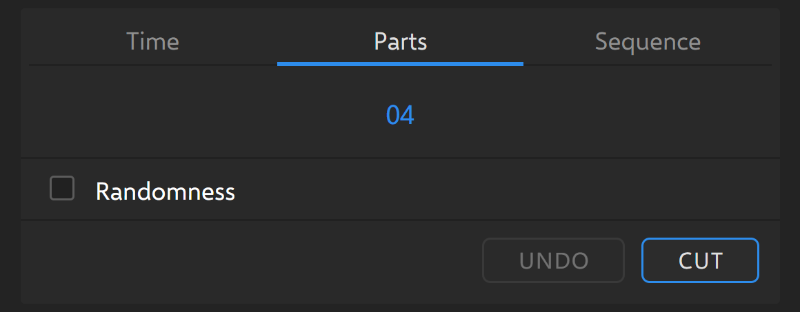
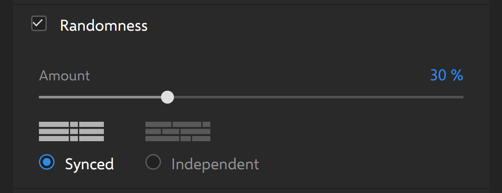
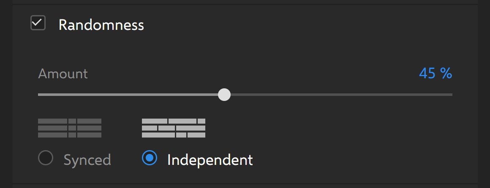
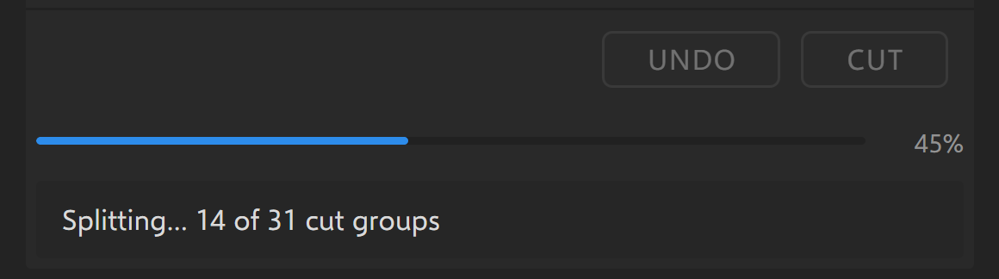
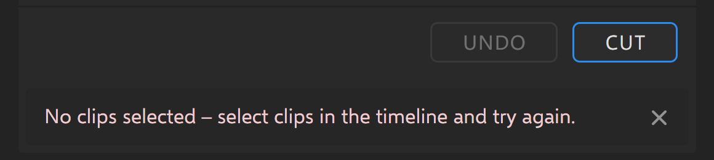
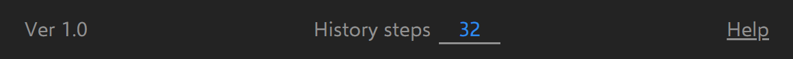
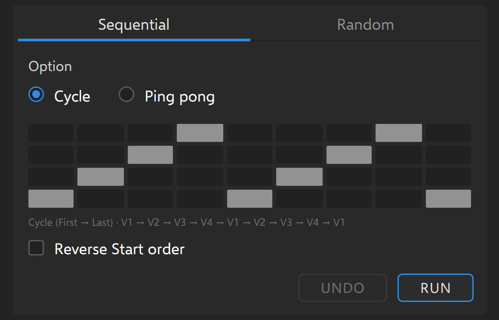
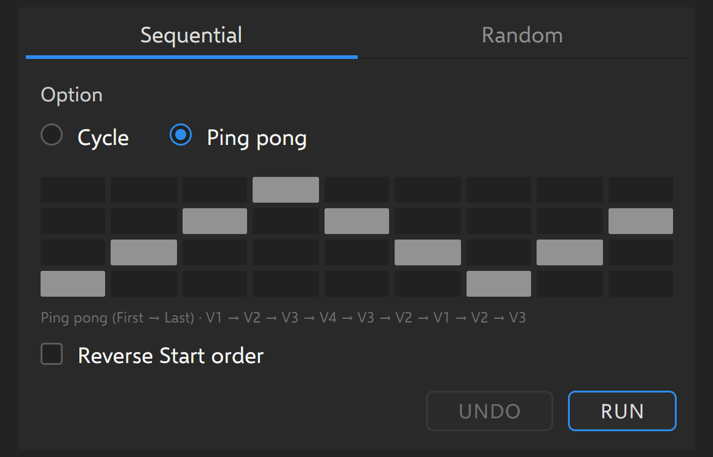
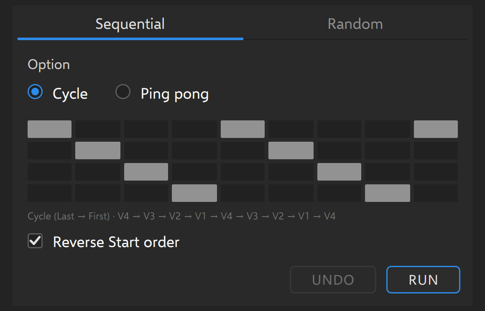
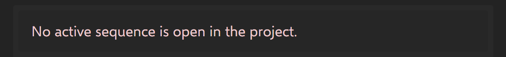

Rychlý start
Typický postup: nejdřív klipy rozřezat, pak je propléct. Obě části ale fungují i samostatně.
- Otevři sekvenciPanel aktivní sekvenci hlídá sám. Dokud žádná není, ukazuje nahoře hlášku a CUT i RUN jsou šedé.
- Opiš History stepsJednou nastav v patičce panelu stejné číslo, jaké má Premiere v nastavení historie (výchozí 32). Proč?
- Vyber klipy a dej CUTV timeline označ klipy, nahoře nastav délku kousků a klikni na Cut.
- Zvol pořadí a dej RUNDole vyber Sequential nebo Random, zkontroluj mřížku a klikni na Run. Každá část má vlastní Undo.
Cutter: řezání klipů
Cutter pracuje jen s klipy, které máš vybrané v timeline. Každý klip řeže od jeho vlastního začátku. Tři záložky nahoře určují, jak se délka kousků počítá. Čísla se ovládají jako v Premiere: tažením myši do stran.

Time: řez po pevném čase
Zadáš délku jednoho kousku jako timecode. Výchozí 00:00:05:00 rozřeže každý vybraný klip po pěti sekundách. Poslední kousek je kratší, pokud klip nevychází přesně.
- Time Parts Sequence
- Přepínání tří režimů řezání. Aktivní záložka je podtržená modře.
- HH : MM : SS : FF
- Hodiny, minuty, sekundy a snímky. Snímky se počítají podle snímkové frekvence aktivní sekvence.
- Tažení myší
- Chyť číslo a táhni doprava (přidat) nebo doleva (ubrat). Hodnota se mění po krocích, stejně jako čísla v Premiere.
- Klik
- Klik na číslo bez tažení ho otevře k přepsání. Enter hodnotu potvrdí.
- Kolečko, šipky
- Kolečkem myši nad číslem nebo šipkami ↑ ↓ v poli měníš hodnotu po jedné.
- Přetečení
- Hodnoty se samy přepočítají: 30 snímků v sekvenci 30 fps je 1 sekunda.

Parts: na stejné díly
Místo času zadáš počet dílů. Každý vybraný klip se rozdělí na tolik stejně dlouhých kousků, bez ohledu na to, jak je dlouhý.
- Počet dílů
- Číslo 1 až 100. Táhni myší do stran, klikni a přepiš, nebo použij kolečko a šipky. Hodnota 01 klip nerozřeže.
- Randomness
- Funguje stejně jako u Time, viz další oddíl.


Randomness: kousky nebudou stejně dlouhé
Checkbox je pod polem s hodnotou u záložek Time i Parts. Když je zaškrtnutý, každý kousek dostane náhodnou délku kolem zadané hodnoty a střih nepůsobí strojově.
- ☑ Randomness
- Zapne náhodnost a odkryje další volby. Nezaškrtnuté = všechny kousky přesně stejné.
- Amount 1–99 %
- Posuvník určuje, o kolik se smí délka kousku lišit. Při 5 s a 10 % vycházejí kousky zhruba mezi 4,5 a 5,5 s. Výchozí je 10 %.
- ◉ Synced
- Klipy, které leží přesně nad sebou (stejný začátek i konec, třeba video s linkovaným zvukem nebo stejné záběry na více stopách), dostanou stejné řezy.
- ◉ Independent
- Každý videoklip dostane vlastní náhodné řezy. Jeho zvuk se řeže s ním, takže obraz a zvuk každého klipu k sobě dál sedí. Zvuk bez videa nad sebou dostane řezy vlastní.
- Ikony nad volbami
- Ukazují princip: rovné řady u Synced, rozházené u Independent.

Sequence: vlastní rytmus délek
Poskládáš vzor z několika délek, například 1 s a 2 s. Cutter pak klip řeže podle tohoto vzoru pořád dokola, takže střih má rytmus.
- Dlaždice
- Jednotlivé délky ve vzoru. Klikem dlaždici vybereš: dostane modrý rámeček a modré číslo. Co pak nastavíš v časovém poli nahoře, platí pro ni.
- Časové pole
- Ovládá se stejně jako u Time. Délka musí být větší než 00:00:00:00.
- +
- Přidá dlaždici na konec. Převezme délku poslední dlaždice a rovnou se vybere.
- ✕
- Odebere dlaždici. Ve vzoru musí zůstat aspoň dvě, proto se u posledních dvou křížek neukazuje.
- ‹ ›
- Posouvají řadou dlaždic, když se do panelu nevejdou.
- Option
- Pořadí, ve kterém se délky střídají: Cycle, Ping pong nebo Random (viz níž).
Cycle
Vzor se opakuje pořád stejně: 1, 2, 3, 1, 2, 3…
Ping pong
Tam a zpátky: 1, 2, 3, 2, 1, 2, 3… Krajní délka se na obratu neopakuje dvakrát po sobě.
Random
Celý vzor se po každém průchodu zamíchá. Každá délka se v jednom kole objeví právě jednou, jen pokaždé v jiném pořadí.



CUT a UNDO
- Cut
- Rozřeže vybrané klipy podle aktivní záložky. Během řezání je šedé.
- Lišta průběhu
- U větší práce se objeví modrá lišta s procenty a text jako „Splitting… 14 of 31 cut groups“. Skupina řezů jsou klipy nad sebou, které se řežou naráz.
- Hláška
- Po dokončení napíše výsledek, například „Done – 9 cuts made across 2 clips.“ Chyby se ukazují na stejném místě. Křížek ✕ hlášku zavře.
- Undo
- Vrátí poslední CUT přes historii Premiere, tolik kroků, kolik ho CUT zapsal. Je šedé, dokud nic nerozřežeš. Když mezitím řezy vrátíš sám přes Ctrl+Z (Mac: Cmd+Z) nebo se sekvence změní, UNDO v panelu se vypne, aby nevrátilo nic jiného.

History steps: kolik umí UNDO vrátit
UNDO v Cutteru vrací řezy přes historii Premiere. Premiere si ale pamatuje jen omezený počet kroků (History States, výchozí 32) a panel si tu hodnotu sám přečíst neumí. Proto ji opíšeš do patičky.
- History steps 32
- Zadej stejné číslo, jaké má Premiere v panelu History → menu → Settings → History States. Panel si hodnotu zapamatuje.
- Dlouhý CUT
- Když by CUT potřeboval víc kroků, než se do historie vejde, nic se nestane a panel napíše varování. Druhé kliknutí na CUT ho spustí i tak, ale bez UNDO v panelu.
- Co se počítá
- Každý řez je jeden krok. Kroky přidává i dočasné zamykání stop během řezání (viz Tipy).
Weaver: proplétání stop
Weaver vezme klipy ze všech video stop sekvence (nezáleží na výběru) a seřadí je na timeline za sebe tak, aby se stopy střídaly. Každý klip zůstane na své stopě, jen se posune v čase. Začíná se tam, kde ležel nejdřívější klip, a kousky na sebe navazují bez mezer.
Tři stopy rozřezané Cutterem leží přes sebe. Po RUN se střídají V1, V2, V3, V1… a hrají jedna po druhé. Linkovaný zvuk se posune s obrazem.

Sequential: pravidelné střídání
Stopy se střídají v pevném pořadí. Mřížka ukazuje, jak bude pořadí vypadat: každý řádek je jedna video stopa (nahoře nejvyšší, dole V1), šedý obdélník je kousek. Sloupců je pro ukázku vždy devět.
- Sequential Random
- Hlavní přepínač pořadí: pravidelně, nebo náhodně.
- ◉ Cycle
- Dokola ve stejném směru: V1, V2, V3, V4, V1, V2…
- ◉ Ping pong
- Tam a zpět: V1, V2, V3, V4, V3, V2, V1, V2… Krajní stopa se na obratu neopakuje.
- ☑ Reverse Start order
- Otočí směr: začíná se od nejvyšší stopy (V4 → V1) místo od V1.
- Popisek pod mřížkou
- Slovně vypíše zvolené pořadí, například „Cycle (First → Last) · V1 → V2 → V3…“.

Ping pong: V1, V2, V3, V4, V3, V2, V1…

Cycle s obráceným startem: V4, V3, V2, V1, V4…

Random: náhodné střídání
Kousky se vybírají ze stop náhodně. Mřížka i RUN používají stejné náhodné číslo (seed), takže na timeline dostaneš přesně to pořadí, které vidíš v náhledu.
- ☑ No repeated track back-to-back
- Dva kousky ze stejné stopy nepůjdou hned po sobě. Dá se zapnout jen tehdy, když má sekvence víc než dvě video stopy.
- Seed 54671
- Každý klik vylosuje nové pořadí a překreslí mřížku. Klikej, dokud se ti náhled nelíbí, pak dej RUN.


RUN a UNDO
- Run
- Přeskládá klipy na timeline podle nastavení. Pracuje přímo na sekvenci a nedělá zálohu. Potřebuje aspoň dvě video stopy s klipy, jinak jen ukáže hlášku.
- Hláška
- „Done – 24 clips interleaved…“ Když se některý zvuk nedal spárovat s obrazem (obraz a zvuk rozřezané na různých místech), zůstane na místě a panel ho vypíše pod hláškou.
- Undo
- Vrátí všechny posunuté klipy na původní místo jedním klikem. Funguje jen pro poslední RUN a jen dokud panel nezavřeš. Když se něco nevrátí, panel vypíše seznam a UNDO zůstane aktivní, takže ho jde kliknout znovu.
Tipy a omezení

- Bez sekvence
- Nahoře se ukáže „No active sequence is open in the project.“ a CUT i RUN zešednou. Jakmile sekvenci otevřeš, panel se sám probudí.
- Jiná sekvence
- Panel hlídá, která sekvence je aktivní. Když přepneš na sekvenci s jinou snímkovou frekvencí, délka intervalu v čase zůstane stejná.
- Světlý a tmavý motiv
- Panel přebírá jas rozhraní Premiere (Preferences → Appearance) a přizpůsobí se mu hned po změně.
- Zamčené stopy
- Weaver stopy zamčené zámkem v hlavičce vynechá: jejich klipy zůstanou na místě a v mřížce se nepočítají. Hodí se pro hudbu nebo titulky.
- Linkovaný obraz a zvuk
- Cutter během řezání na chvíli zamkne ostatní stopy, aby se video a jeho zvuk rozřízly naráz a zůstaly linkované. Zámky pak vrátí do původního stavu. Pokud to tvoje verze Premiere ze skriptu neumí, řeže po stopách a kousky obrazu a zvuku nebudou linkované (panel to napíše).
- Okraje klipu
- Cutter nikdy neřeže blíž než jeden snímek od začátku nebo konce klipu. Klip kratší než kousek přeskočí beze změny.
- Zvuk ve Weaveru
- Zvuk se páruje podle čísla stopy (A1 k V1, A2 k V2…) kousek po kousku, ale jen když k sobě časově sedí. Jinak se hledá zvuk se stejným začátkem i délkou. Co pár nenajde, zůstane na místě a panel to vypíše.
- Help
- Odkaz v patičce panelu. V této verzi zatím nikam nevede.
Hlášky panelu
Panel píše anglicky. Tady je, co nejčastější hlášky znamenají a co s nimi.
| Hláška | Co dělat |
|---|---|
| No active sequence is open in the project. | Otevři sekvenci v Premiere. Do té doby jsou CUT a RUN šedé. |
| No clips selected in the timeline… | V timeline označ klipy, které má Cutter rozřezat, a dej CUT znovu. |
| Enter an interval greater than 00:00:00:00. | V záložce Time je nulová délka. Zadej aspoň jeden snímek. |
| A segment needs to be longer than 00:00:00:00. | Dlaždice v Sequence nemůže mít nulovou délku. |
| Nothing to cut — selection produced no cut points. | Vybrané klipy jsou kratší než kousek. Zkrať délku nebo použij Parts. |
| This Run needs N history steps, but Premiere keeps only M… | CUT se nevejde do historie Premiere. Druhé kliknutí na CUT ho spustí bez UNDO. Jinak vyber méně klipů nebo zvyš History States (viz History steps). |
| …Undo isn't available for this Run… use File > Revert if needed. | CUT proběhl, ale panel ho vrátit neumí. Vrátit jde jen přes File → Revert. |
| Video and audio pieces are not linked… | Řezy jsou hotové, ale kousky obrazu a zvuku nejsou linkované. Propoj je v Premiere ručně (Link), pokud je potřebuješ. |
| Undo reverted only part of the Run… | Zbytek vrať přes Ctrl+Z (Mac: Cmd+Z) nebo File → Revert. |
| No video tracks identified. Open a sequence with at least 2 video tracks. | Weaver potřebuje aspoň dvě odemčené video stopy, na kterých jsou klipy. |
| Done, but some audio is no longer in sync with its video… | Některý zvuk nenašel pár a zůstal na místě. Dej UNDO a rozřež obraz i zvuk společně (Synced). |
| Done, but N move(s) failed… | Některé klipy se nepodařilo posunout. Seznam je pod tlačítky; zvaž UNDO. |
| Undo only partially completed… | Klikni na UNDO znovu, nebo dodělej zbytek přes Ctrl+Z. |